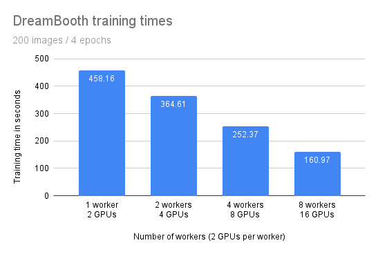

Fine-tuning DreamBooth with Ray AIR
Contents
Fine-tuning DreamBooth with Ray AIR#
This example shows how to fine-tune a DreamBooth model using Ray AIR.
Because of the large model sizes, you’ll need 2 A10G GPUs per worker.
The example can leverage data-parallel training to speed up training time. Of course, this will require more GPUs.
The demo tunes both the text_encoder and unet parts of Stable Diffusion, and utilizes the prior preserving loss function.

The full code repository can be found here: https://github.com/ray-project/ray/blob/master/python/ray/air/examples/dreambooth/
How it works#
This example leverages Ray Data for data loading and Ray Train for distributed training.
Data loading#
Note
You can find the latest version of the code here: dataset.py
The latest version might differ slightly from the code presented here.
We use Ray Data for data loading. The code has three interesting parts.
First, we load two datasets using ray.data.read_images():
instance_dataset = read_images(args.instance_images_dir)
class_dataset = read_images(args.class_images_dir)
Then, we tokenize the prompt that generated these images:
tokenizer = AutoTokenizer.from_pretrained(
pretrained_model_name_or_path=args.model_dir,
subfolder="tokenizer",
)
def _tokenize(prompt):
return tokenizer(
prompt,
truncation=True,
padding="max_length",
max_length=tokenizer.model_max_length,
return_tensors="pt",
).input_ids.numpy()
# Get the token ids for both prompts.
class_prompt_ids = _tokenize(args.class_prompt)[0]
instance_prompt_ids = _tokenize(args.instance_prompt)[0]
And lastly, we apply a torchvision preprocessing pipeline to the images:
transform = transforms.Compose(
[
transforms.ToTensor(),
transforms.RandomCrop(image_resolution),
transforms.Normalize([0.5], [0.5]),
]
)
preprocessor = TorchVisionPreprocessor(["image"], transform=transform)
We apply all of this in final step:
instance_dataset = preprocessor.transform(instance_dataset).add_column(
"prompt_ids", lambda df: [instance_prompt_ids] * len(df)
)
class_dataset = preprocessor.transform(class_dataset).add_column(
"prompt_ids", lambda df: [class_prompt_ids] * len(df)
)
Distributed training#
Note
You can find the latest version of the code here: train.py
The latest version might differ slightly from the code presented here.
The central part of the training code is the training function. This function accepts a configuration dict that contains the hyperparameters. It then defines a regular PyTorch training loop.
There are only a few locations where we interact with the Ray AIR API. We marked them with in-line comments in the snippet below.
Remember that we want to do data-parallel training for all our models.
We load the data shard for each worker with session.get_dataset_shard(“train”)
We iterate over the dataset with train_dataset.iter_torch_batches()
We report results to Ray AIR with session.report(results)
The code was compacted for brevity. The full code is more thoroughly annotated.
def train_fn(config):
cuda = get_cuda_devices()
# Load pre-trained models.
text_encoder, noise_scheduler, vae, unet = load_models(config, cuda)
# Wrap in DDP
text_encoder = DistributedDataParallel(
text_encoder, device_ids=[cuda[1]], output_device=cuda[1]
)
unet = DistributedDataParallel(unet, device_ids=[cuda[0]], output_device=cuda[0])
# Use the regular AdamW optimizer to work with bfloat16 weights.
optimizer = torch.optim.AdamW(
itertools.chain(text_encoder.parameters(), unet.parameters()),
lr=config["lr"],
)
train_dataset = session.get_dataset_shard("train")
# Train!
num_train_epochs = config["num_epochs"]
print(f"Running {num_train_epochs} epochs.")
global_step = 0
for epoch in range(num_train_epochs):
for step, batch in enumerate(
train_dataset.iter_torch_batches(
batch_size=config["train_batch_size"], device=cuda[1]
)
):
# Load batch on GPU 2 because VAE and text encoder are there.
batch = collate(batch, cuda[1], torch.bfloat16)
optimizer.zero_grad()
# Convert images to latent space
latents = vae.encode(batch["images"]).latent_dist.sample() * 0.18215
# Sample noise that we'll add to the latents
noise = torch.randn_like(latents)
bsz = latents.shape[0]
# Sample a random timestep for each image
timesteps = torch.randint(
0,
noise_scheduler.config.num_train_timesteps,
(bsz,),
device=latents.device,
)
timesteps = timesteps.long()
# Add noise to the latents according to the noise magnitude at each timestep
# (this is the forward diffusion process)
noisy_latents = noise_scheduler.add_noise(latents, noise, timesteps)
# Get the text embedding for conditioning
encoder_hidden_states = text_encoder(batch["prompt_ids"])[0]
# Predict the noise residual. We need to move all data bits to GPU 1.
model_pred = unet(
noisy_latents.to(cuda[0]),
timesteps.to(cuda[0]),
encoder_hidden_states.to(cuda[0]),
).sample
target = get_target(noise_scheduler, noise, latents, timesteps).to(cuda[0])
# Now, move model prediction to GPU 2 for loss calculation.
loss = prior_preserving_loss(
model_pred, target, config["prior_loss_weight"]
)
loss.backward()
# Gradient clipping before optimizer stepping.
clip_grad_norm_(
itertools.chain(text_encoder.parameters(), unet.parameters()),
config["max_grad_norm"],
)
optimizer.step() # Step all optimizers.
global_step += 1
results = {
"step": global_step,
"loss": loss.detach().item(),
}
session.report(results)
We can then run this training loop with Ray AIR’s TorchTrainer:
args = train_arguments().parse_args()
# Build training dataset.
train_dataset = get_train_dataset(args)
print(f"Loaded training dataset (size: {train_dataset.count()})")
# Train with Ray AIR TorchTrainer.
trainer = TorchTrainer(
train_fn,
train_loop_config=vars(args),
scaling_config=ScalingConfig(
use_gpu=True,
num_workers=args.num_workers,
resources_per_worker={
"GPU": 2,
},
),
datasets={
"train": train_dataset,
},
)
result = trainer.fit()
Configuring the scale#
In the TorchTrainer, we can easily configure our scale.
The above example uses the num_workers argument to specify the number
of workers. This defaults to 2 workers with 2 GPUs each - so 4 GPUs in total.
To run the example on 8 GPUs, just set the number of workers to 4 using --num-workers=4!
Or you can change the scaling config directly:
scaling_config=ScalingConfig(
use_gpu=True,
- num_workers=args.num_workers,
+ num_workers=4,
resources_per_worker={
"GPU": 2,
},
)
If you’re running multi-node training, you should make sure that all nodes have access to a shared
storage (e.g. via NFS or EFS). In the example script below, you can adjust this location with the
DATA_PREFIX environment variable.
Training throughput#
We ran training using 1, 2, 4, and 8 workers (and 2, 4, 8, and 16 GPUs, respectively) to compare throughput.
Setup:
2 x g5.12xlarge nodes with 4 A10G GPUs each
Model as configured below
Data from this example
200 regularization images
Training for 4 epochs (800 steps)
Use a mounted External File System to share data between nodes
3 runs per configuration
Because network storage can be slow, we excluded the time it takes to save the final model from the training time.
We expect that the training time should benefit from scale and decreases when running with more workers and GPUs.
{kind=link}
Number of workers |
Number of GPUs |
Training time |
|---|---|---|
1 |
2 |
458.16 (3.82) |
2 |
4 |
364.61 (1.65) |
4 |
8 |
252.37 (3.18) |
8 |
16 |
160.97 (1.36) |
While the training time decreases linearly with the amount of workers/GPUs, we observe some penalty. Specifically, with double the amount of workers we don’t get half of the training time.
This is most likely due to additional communication between processes and the transfer of large model weights. We are also only training with a batch size of one because our GPU memory is limited. On larger GPUs with higher batch sizes we would expect a greater benefit from scaling out.
Run the example#
First, we download the pre-trained stable diffusion model as a starting point.
We will then train this model with a few images of our subject.
To achieve this, we choose a non-word as an identifier, e.g. unqtkn. When fine-tuning the model with our subject, we will teach it that the prompt is A photo of a unqtkn <class>.
After fine-tuning we can run inference with this specific prompt. For instance: A photo of a unqtkn <class> will create an image of our subject.
Step 0: Preparation#
Clone the Ray repository, go to the example directory, and install dependencies.
git clone https://github.com/ray-project/ray.git
cd ray/python/ray/air/examples/dreambooth
pip install -Ur requirements.txt
Prepare some directories and environment variables.
export DATA_PREFIX="./"
export ORIG_MODEL_NAME="CompVis/stable-diffusion-v1-4"
export ORIG_MODEL_HASH="249dd2d739844dea6a0bc7fc27b3c1d014720b28"
export ORIG_MODEL_DIR="$DATA_PREFIX/model-orig"
export ORIG_MODEL_PATH="$ORIG_MODEL_DIR/models--${ORIG_MODEL_NAME/\//--}/snapshots/$ORIG_MODEL_HASH"
export TUNED_MODEL_DIR="$DATA_PREFIX/model-tuned"
export IMAGES_REG_DIR="$DATA_PREFIX/images-reg"
export IMAGES_OWN_DIR="$DATA_PREFIX/images-own"
export IMAGES_NEW_DIR="$DATA_PREFIX/images-new"
export CLASS_NAME="toy car"
mkdir -p $ORIG_MODEL_DIR $TUNED_MODEL_DIR $IMAGES_REG_DIR $IMAGES_OWN_DIR $IMAGES_NEW_DIR
Copy some images for fine-tuning into $IMAGES_OWN_DIR.
Step 1: Download the pre-trained model#
Download and cache a pre-trained Stable-Diffusion model locally.
Default model and version are CompVis/stable-diffusion-v1-4
at git hash 3857c45b7d4e78b3ba0f39d4d7f50a2a05aa23d4.
python cache_model.py --model_dir=$ORIG_MODEL_DIR --model_name=$ORIG_MODEL_NAME --revision=$ORIG_MODEL_HASH
Note that actual model files will be downloaded into
\<model_dir>\snapshots\<git_hash>\ directory.
Step 2: Create the regularization images#
Create a regularization image set for a class of subjects:
python run_model.py \
--model_dir=$ORIG_MODEL_PATH \
--output_dir=$IMAGES_REG_DIR \
--prompts="photo of a $CLASS_NAME" \
--num_samples_per_prompt=200
Step 3: Fine-tune the model#
Save a few (4 to 5) images of the subject being fine-tuned in a local directory. Then launch the training job with:
python train.py \
--model_dir=$ORIG_MODEL_PATH \
--output_dir=$TUNED_MODEL_DIR \
--instance_images_dir=$IMAGES_OWN_DIR \
--instance_prompt="a photo of unqtkn $CLASS_NAME" \
--class_images_dir=$IMAGES_REG_DIR \
--class_prompt="a photo of a $CLASS_NAME"
Step 4: Generate images of our subject#
Try your model with the same commandline as Step 2, but point to your own model this time!
python run_model.py \
--model_dir=$TUNED_MODEL_DIR \
--output_dir=$IMAGES_NEW_DIR \
--prompts="photo of a unqtkn $CLASS_NAME" \
--num_samples_per_prompt=20